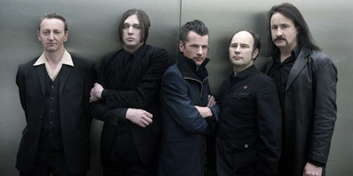
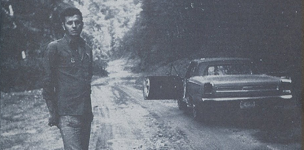
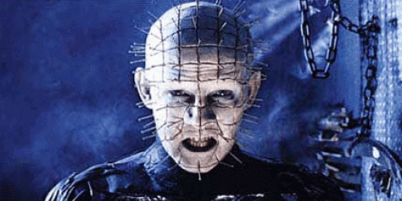

{kind=link}
Si nos preguntasen que grupos nos dan mas miedo en SBS no sabriamos por donde empezar. Somos unos mierdas, es un hecho. My Chemical Romance, Tokyo Hotel, las hordas de Beliebers o la mirada astuta de Jónsi son cosas que nos hacen miccionarnos encima con solo recordarlas. Lo único que nos calma en esos casos es ponernos un poco de música alegre, de esa que te regocija el corazón y te llena el alma de sonrisas.
1. Einstürzende Neubauten – Halber Mensch
S—G  Más que una canción, Halber Mensch es un cántico, un sonido ritual, sectario. Un grupo de siervos lobotomizados corean dirigidos por Blixa Bargled con la aparente intención de invocar al dios demoniaco del industrial. Ve a una fábrica abandonada el día de Halloween, dibuja un circulo de sangre a tu alrededor y canta esto a grito pelado. No hay huevos.{kind=link}
https://www.youtube.com/watch?v=qnovJpnhygI
–
2. Aphex Twin – Come To Daddy
Tharandur
{kind=link}
Indiscutible clásico moderno y “hit” más reconocible de Aphex Twin. El tenso arranque de tema estalla en pedazos con un ¿ser? prometiéndonos que se va a comer nuestra alma. Pocas veces el delirante IDM de Aphex ha sonado tan contundente, aunando imprevisibles beats, guitarras distorsionadas, gritos y canciones infantiles. Una mezcla que da como resultado un tema tan marchoso como perturbador.
–
3. Suicide Silence – Bludgeoned To Death
Mcore
{kind=link}
Bludgeoned To Dead escoge un camino mucho más directo. Dejamos lo psicológico a un lado y nos centramos en el agobio y la violencia más gratuita. Nos guía por unos sonidos y una oscuridad donde no nos será difícil imaginarnos a un psicópata tras nosotros tratando de dar rienda suelta a su locura. Suicide Silence siempre suele recurrir a esta temática y se suelen apoyar concretamente en la violencia de género. Otro tema que estuve a punto de elegir de este grupo fue …And Then She Bled donde podemos oír una supuesta conversación telefónica entre una chica y el número de emergencias contando la terrible escena que está presenciando y lo que va a ocurrir.
–
4. Biosphere – Phantasm
Tharandur
{kind=link}
Un loop obsesivo, agudos efectos y ruido de fondo son el acompañamiento perfecto para el mantra “I have a dream last night / We have the same dream” pronunciado por unas niñas que se repite a lo largo de Phantasm. Una canción con una atmósfera glacial y realmente inquietante.
–
4. The Devil Wears Prada – Outnumbered
Patpatpat
{kind=link}
Y no podían faltar los zombies en un día como este. The Devils Wears Prada sacaron un EP de cinco temas bastante freak bajo el nombre de Zombie. En Outnumbered nos introducimos en una de esas películas de muertos vivientes donde tratamos de escapar de ellos y de su agobiante amenaza. Un tema en comparación con el resto bastante inofensivo pero con una temática que encaja a la perfección en un día como este.
–
5. Hasil Adkins – We Got A Date
Remem0rama
A juzgar por cómo eran las citas favoritas de este pionero del psychobilly, no podemos creer que Hasil Adkins tuviera mucho éxito entre las chicas del condado de Boone en Virginia. O al menos, no muchas vivirían para contarlo.
{kind=link}
–
6. Alasdair Roberts – A Lyke Wake Dirge
AsbestosDeath
{kind=link}
A Lyke Wake Dirge es una canción tradicional que, aunque data de una era cristiana posterior, contiene gran cantidad de símbolos e imágenes que remiten a las creencias atávicas sobre el paso del alma a través del Purgatorio y hacia el otro mundo, algo apropiado en un día como Samhain, en el que las puertas al Más Allá se abrían para dar paso a las almas de los difuntos que cruzaban en busca de descanso o volvían al mundo de los vivos para ajustar sus cuentas. La especial voz del escocés Alasdair Roberts se acompaña de un coro y unos arreglos austeros como manda la tradición folk y hacen de esta fúnebre tonada algo ciertamente cautivador.
–
7. Bohren & der Club of Gore – Midnight Black Earth
S—G
{kind=link}
No hace falta perder la compostura para dar miedo. Bohren & der Club of Gore te asesinarían con traje y corbata, con glamour, sutilmente. Porque el jazz también puede dar yuyu. Una banda sonora ideal para escuchar mientras vuelves a casa solo por las calles vacías. Cada sombra o pequeño movimiento te asustara.
–
8. Melissa Auf der Maur & Glenn Danzig – Father’s Grave
Remem0rama
{kind=link}
Father’s Grave es el primer dueto realizado por el progenitor del horror punk Glenn Danzig, en el cual la antigua bajista de Hole, Melissa Auf der Maur, en duelo por la muerte de su supuesto padre, mantiene una conversación con el enterrador (Danzig), creando un sensacional contraste de voces.
–
9. Throbbing Gristle – Slug Bait
AsbestosDeath

Un asesino que acecha mientras duermes y te asalta en sueños. Un psicópata que practica un sangriento ritual de cirugía y asesinato con el cuerpo de tu esposa y tu hijo no nato. La letra de este tema de Throbbing Gristle está inspirada en un caso real (la supera la ficción) y, junto con la instrumentación cacofónica y la perturbadora actuación vocal de Genesis hacen de Slug Bait un tema no apropiado para los propensos al escándalo. Desde luego no quiero conocer nunca el horror de despertarme una noche y encontrarme a esta figura observándome en la oscuridad.
{kind=link}
–
10. Slipknot – Skin Ticket
Patpatpat
{kind=link}
Y si el asunto va de disfraces, no podían faltar Slipknot. Los nueve de Des Moines nos dejaron un disco tremendamente oscuro como es Iowa y en él encontramos temas como Skin Ticket donde con unos de los sonidos de guitarra más abrasivos que se hayan oído jamás nos hacen mirar cara a cara a nuestros miedos más internos y a pensar en la nimiedad del ser. Slipknot siempre han jugado con este tipo de temática: la autodestrucción, lo enfermizo, el rechazo y el desprecio… En definitiva, un tema bastante desalentador.
–
11. Envy – Evidence
Mcore
{kind=link}
Maestros transmitiendo sensaciones, los japoneses Envy nos dejaron un par de canciones en su A Dead Sinking Story que no llegaban directamente a asustarnos, pero si a dejarnos con cierta sensación de intriga y misterio. Hablo de Evidence y A Conviction That Speed, la primera de un corte más electrónico y la otra se ayuda de un discurso para transmitirnos esa sensación de inquietud. Me quedo con Evidence, pues supone el tercer corte del disco y recuerdo en su tiempo estar en la cama con la luz apagada escuchando este disco con los cascos y sentir ese mal rollo de peli japonesa al llegar a dicho tema. Me recordaba mucho al videojuego de Silent Hill.
–
12. Rob Zombie – Let It All Bleed Out
Psichoboy
{kind=link}
Enfrentarnos a un Halloween sin Rob Zombie sería tremendamente escandaloso, ya que sus aportaciones en esta festividad, además de en el apartado musical se han complementado con las cinematográficas. Hemos elegido este tema, uno de los más potentes de su disco Educated Horses, el cual suele ser interpretado en directo con proyecciones de imágenes de la familia Manson.
–
13. Coil – Hellraiser Theme
Psichoboy

Lamentablemente, la banda sonora que los industriales Coil compusieron para la banda sonora de Hellraiser (Clive Barker, 1987) fue finalmente rechazada a favor de una composición orquestal más tradicional. Es difícil de entender este hecho teniendo en cuenta la tensión y la claustrofobia producida por Coil. Afortunadamente los temas acabaron editándose bajo el nombre The Unreleashed Themes For Hellraiser como parte del recopilatorio Unnatural History II (1995).
{kind=link}
–
14. Type O Negative – Halloween in Heaven
.:SuicideByStar:.
{kind=link}
Si de algo se puede jactar SBS (aparte de sus barbacoas) es de la gran variedad que abarcan los gustos de cada uno de sus miembros, hasta el punto de que es virtualmente imposible encontrar un sabor que satisfaga los refinados paladares de todos. Una de las raras ocasiones en las que casi se llega al consenso es en la devoción por Type O Negative y su tristemente fallecido frontman Peter Steele, reconocido y apreciado por sus múltiples y grandes virtudes, la segunda de las cuales es una profundo vozarrón que cualquiera reconocería al instante. Por ser nosotros quienes somos y ser ellos quienes eran, no podemos dejar pasar la ocasión de cerrar el especial Halloween con este tema de los neoyorquinos preferidos de (casi) todos nosotros.
–
Apoyános